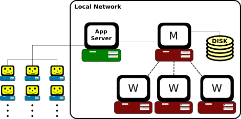
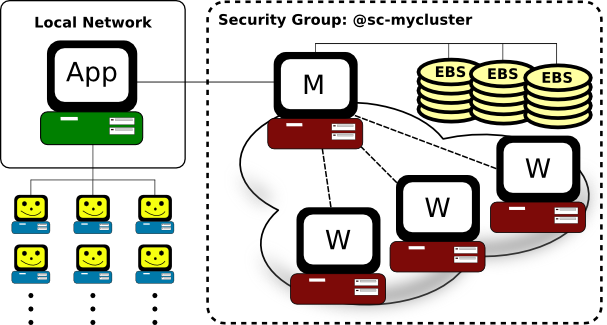
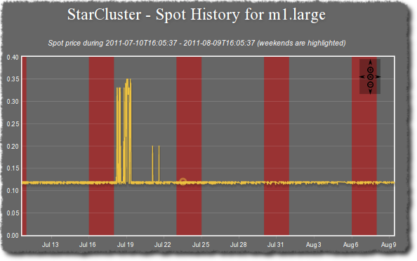

The Software Tools for Academics and Researchers (STAR) [1] group focuses on assisting faculty at the Massachusetts Institute of Technology (MIT) in bringing research tools into the classroom. To date, the STAR team has developed software for introductory Biology, advanced Hydrology, Materials Science, and Civil Engineering disciplines at MIT.
For some projects the software developed is a stand-alone desktop application that can be used entirely on a student’s laptop or desktop machine. This is the case, for example, for the STAR Biology toolset: StarBiochem [2], StarGenetics [3], and StarORF [4]. However, in some cases faculty members wish to run more computationally demanding software in their lectures or homework sets than a student’s personal computer is capable of handling.
This is the case for the cross-discipline “Introduction to Modeling and Simulation” [5] course at MIT. This course introduces students to various approaches to materials modeling including continuum methods, molecular dynamics, and quantum mechanics. Students learn how to use these methods to predict the functional properties of a material such as Young’s modulus, strength, thermal properties, color, etc. Throughout the course, instructors run computationally demanding software during their lectures to demonstrate these methods and students also use computational experiments to apply what they’ve learned in class to their homework assignments.
The STAR team was tasked with designing a system, eventually named StarMolsim [6], that would support roughly 30-50 students kicking off long-running simulations the night before the homework was due. The STAR group used the following design for the StarMolsim system:

In the StarMolsim system, users connect to an application server and login to the web-based front-end for StarMolsim. The web-based front-end handles running simulations, monitoring the simulation runs, collecting the results, and making the results available for download. Behind the scenes, the front-end submits jobs to a local cluster, waits for them to finish, and collects the results. The cluster itself consists of a master node (M) and any number of worker nodes (W).
The entire cluster is configured with the Oracle Grid Engine queuing system to handle job submissions. All of the simulation software is compiled and installed in $HOME and NFS-shared to the rest of the nodes. Each worker node is configured with scratch space on a local disk that is used to run the job. Job results are then copied from scratch to an NFS-shared directory after a job finishes.
The STAR group initially purchased a local 10-node cluster, implemented the above design, and supported the course for a couple of semesters. However, over time, the cluster was starting to show signs of age. Nodes began to falter and NFS shares were failing randomly during students’ simulations causing a “support nightmare”. The group eventually abandoned the old cluster in favor of a newer and free-to-use student cluster available in the Materials Science department.
Moving to the student cluster presented additional challenges. The cluster was shared among several faculty members for different courses and the entire OS and software stack was dated, making it harder to compile and install the requisite software for the course. Using the student cluster ultimately resulted in the same hardware issues and random failures as the previous cluster. The main issues with both on-campus clusters were:
Maintaining local clusters was beginning to become a support nightmare and was taking a significant amount of developer time from the STAR group to support the course each semester. It was clear that a more sustainable, and scalable approach to both developing and supporting these systems was needed. The group then learned about Amazon’s Elastic Compute Cloud (EC2) and Simple Storage Service (S3) “web services” in their early beta stages during a talk given at MIT. The group gathered from the talk that Amazon’s new “cloud” had the potential to help alleviate all of the issues experienced above:
It was clear that the cloud could significantly reduce the amount of developer time needed to administer the cluster back-end for StarMolsim and the STAR group was ready to experiment. The first challenge was to automate the process of creating and destroying a cluster in order to fully take advantage of the cloud’s pay-for-what-you-use pricing model.
The STAR team worked to design a tool that would allow one to easily define, create, and destroy a Linux cluster on the cloud. This work eventually led to the creation of the StarCluster [7] project. StarCluster is an open-source tool that builds, configures, and manages computing clusters on Amazon EC2. Out-of-the-box StarCluster configures:
These requirements are a bare-necessity for most Linux-based, high-performance or distributed computing environments and are common in most computational research labs. In addition to automatic cluster configuration, StarCluster also ships with it’s own machine “images” that contain applications and libraries for scientific computing and software development. The AMIs currently consist of the following scientific libraries:
Developing StarCluster allowed the STAR group to easily reconfigure the StarMolsim system for the cloud. All of the simulation software was compiled and installed on an Elastic Block Storage volume. Storing the applications and data on an EBS volume allowed for easy back-ups via EBS’s “snapshot” capabilities and also made it possible to add more disk space later on if needed. The application server was configured to use the cloud as the back-end instead of a local cluster:

In the above setup the cluster’s security group, @sc-mycluster, is configured to only allow connections from the application server for added security.
Typically StarMolsim is used for months at a time during a semester. Originally ‘on-demand’ instances that run 24/7 at a fixed rate were used to support the StarMolsim back-end. Running all of the time allowed students to do their homework sets and faculty members to run example simulations during class at any time of day.
During the first pilot semester 10 on-demand m1.large instances were used to build a 20-core cluster very similar to the cluster used previously on campus. However, after receiving the bill, the group discovered very quickly that running 10 instances at a flat rate for weeks at a time adds up quickly - roughly $2448/month not including additional costs like data transfer and storage. Additionally, the usage monitoring showed that the cluster was mostly idle even during the peak-periods of the semester. So, the STAR group needed to look for simple ways to optimize around cost, and looked towards Amazon EC2 spot instances. Spot instances allow users to bid on un-used instances at a discounted rate which is usually much less than the “on-demand” flat rate. The StarCluster tool was updated to support requesting spot instances in order to take advantage of these cheaper un-used resources.
In general, the price for a spot instance fluctuates over time. Users place a maximum bid that they’re willing to pay for a spot instance. Users only ever pay the current spot price regardless of their maximum bid, however, if the current spot price at any time exceeds the user’s maximum spot bid, their spot instance is eligible for shutdown in favor of other higher bidders. This makes it important to choose a competitive bid when requesting spot instances in order to avoid being shutdown in favor of other users.
When launching spot clusters, the spot price history over the last 30 days or more is examined in order to determine the spot price trends. Based on the results, the team would bid at least, if not double, the maximum spot Price over the last 30 days to lessen the odds of being shutdown during a “spike” period in the spot price.
Examining the spot price history for a given instance type can be accomplished using StarCluster:
% starcluster spothistory -p m1.large
StarCluster - (http://web.mit.edu/starcluster)
Software Tools for Academics and Researchers (STAR)
Please submit bug reports to starcluster@mit.edu
>>> Current price: $0.12
>>> Max price: $0.35
>>> Average price: $0.13
The above command shows the current spot price as well as the average and maximum spot price over the last 30 days. The -p option launches a web browser displaying an interactive graph of the spot price over the last 30 days:

In the above example, the maximum price over the last 30 days was $0.35, which is only $0.01 more than the flat-rate cost ($0.34 at the time of writing). There were a couple of spikes around July 19th, but otherwise the spot price over the last 30 days has on average been about 62% cheaper than the on-demand price. Given that the maximum spot price is only $0.01 more than the on-demand, the team would bid at least $0.35 to lessen the odds of being shutdown during a spike period in the spot price. For a production system running on spot using a more aggressive bid of twice the current spot price is preferred. In this case the group would bid $0.70 making it highly unlikely (but not impossible) that the instances would be terminated in favor of a higher bidder.
After determining a competitive spot bid, StarCluster makes it very easy to request a spot cluster:
$ starcluster start -s 10 -b 0.70 -i m1.large myspotcluster
The above command will create and configure a 10-node spot-cluster, named spotcluster, placing a $0.70 max bid for each worker node. The master node is launched as an on-demand instance by default for stability. If the master were to go down due to spot-price fluctuations the entire cluster would lose the Oracle Grid Engine queuing system as well as all NFS shares. Using a flat-rate instance for the master node significantly lowers the odds of losing the master node.
Of course there are caveats to using spot instances that need to be addressed. For example, once a spot request has been fulfilled and an instance has been created, the instance will run as long as the current spot price has not exceeded the maximum spot bid. If the current spot price ever exceeds the maximum spot bid then the instance is subject to being shutdown by Amazon in favor of a higher bidder. This means that spot users in general need to structure their applications and systems to be tolerant of instances that may be abruptly terminated during processing due to spot price fluctuations.
At first this appeared to be a show-stopper for StarMolsim. The potential for a worker node to be randomly terminated during a student’s long-running simulation was cause for concern given that this would generate an error for users which would cause them to lose simulation time until they manually restarted a job. Fortunately, the STAR group was able to take advantage of a feature within Oracle Grid Engine system to address this issue. With Oracle Grid Engine it is possible to mark jobs as “re-runnable” when submitting jobs:
$ qsub -r myjobscript.sh
This instructs the queueing system to re-execute the same job on a different worker node if the currently running worker node fails or is terminated. With all jobs marked as ‘re-runnable’ a given spot instance can be terminated and any running jobs on the instance will simply be restarted on a different worker. This approach does not resume a job where it left off before it was interrupted, however, it does ensure that it will eventually be completed if and when resources are available. For StarMolsim this meant that if/when a spot instance is terminated students will simply incur a longer wait time for their job results rather than receiving an error requiring them to resubmit their simulations. Using an aggressive spot bid as mentioned previously minimizes the odds of this scenario occuring.
One important aspect of this setup is that all job results need to eventually be written to an NFS-share on the master node. The STAR group’s approach was to use ephemeral storage for scratch space while the job was running. After a job finished the results were copied from ephemeral storage to an NFS-shared directory such as “/home” on a StarCluster. The “shuffling” of data from scratch storage to an NFS-shared directory was handled within the Oracle Grid Engine job script after all of the job’s tasks were completed. Copying the results to an NFS-share after a job was completed ensured that the data would not be lost due to a spot instance being terminated in favor of a higher bidder.
Switching to spot instances alone cut costs by about 60% over a four month semester. However, looking at the logs during the semester revealed a lot of idle time even during peak periods of the semester. This was mostly due to students running most of their simulations on or around the night before the homework was due. It was clear that the cost of operating the cluster could be reduced further simply by shutting down “idle” instances and only adding more instances when the cluster is overloaded.
Of course, how to determine when a node is idle or when the cluster is overloaded depends highly on the application(s) being used. For the StarMolsim system, all important work is managed using the Oracle Grid Engine queueing system. The queueing system provides the ability to schedule jobs and distribute them across the nodes in a cluster without overloading any one node. Fortunately, the Oracle Grid Engine system is easy to monitor and check whether there are jobs queued, how many are running, which instances they’re running on, etc. These statistics make it possible to precisely determine whether or not a given node is idle or the cluster is overloaded. If a node is idle then it’s eligible to be terminated to cut costs. If the cluster is overloaded additional nodes could be added.
The group set out to design a system within StarCluster that would optimize for cost based on the Oracle Grid Engine queue’s workload. The majority of this work was implemented by, Rajat Banerjee, a highly motivated graduate student at Harvard, as a part of his master’s thesis [8] and is now available within StarCluster:
$ starcluster loadbalance myspotcluster
StarCluster’s load balancer will automatically connect to the master node and begin observing the Oracle Grid Engine queue. After observing the cluster for some time the load balancer will begin making decisions on whether to add or remove nodes from the cluster. Worker nodes are only eligible to be terminated if they’re idle for long enough and if they’ve been up for the majority of an hour in order to get the most out of the instance hour already paid for. Out of necessity the master node can never be removed. If there are jobs waiting in the queue for an extended period of time the load balancer will calculate how many worker nodes are needed to process the queue and begin adding the required nodes. This ensures that worker nodes are only ever running when there are jobs to be processed which reduces the amount of instance hours charged.
The process of moving StarMolsim over to the cloud to support the “Introduction to Modeling and Simulation” course at MIT was a huge success. The cloud enabled the STAR group to move away from the responsibility of owning and maintaing dedicated hardware and instead focus on their core mission of developing software and services for faculty, students, and researchers at MIT.
The cloud has also allowed the STAR group to completely manage their clusters programmatically and automate almost all of the administrative tasks. For example, during a previous semester the head node of a long-running cluster was beginning to fail. Students were notified that there was an issue with the cluster and within 15 minutes the issue was resolved simply by shutting down the entire cluster and bringing it back up with a new set of machines. This is an invaluable feature inherent to the cloud that would not be possible using local dedicated resources.
In the end the cost of operating a cluster in the cloud during peak-periods of the semester was dramatically lower than the yearly cost of housing, powering, and cooling the previous local clusters in a data center. Further cost savings were observed by using a combination of spot instances and StarCluster’s load balancing feature. It is clear that the cloud is the most viable solution for supporting additional courses in the future without significant funds and developer time.
Finally, StarCluster has proven to be an invaluable tool for supporting computational courses and researchers at MIT. The project continues to see interest from a growing user-base of faculty, researchers, and startup companies in a variety of fields including, but not limited to, Biology, Materials Science, Astronomy, Machine Learning, and Statistics.
| [1] | http://web.mit.edu/star |
| [2] | http://web.mit.edu/star/biochem |
| [3] | http://web.mit.edu/star/genetics |
| [4] | http://web.mit.edu/star/orf |
| [5] | http://stellar.mit.edu/S/course/1/sp11/1.021/index.html |
| [6] | http://web.mit.edu/star/molsim |
| [7] | http://web.mit.edu/starcluster |
| [8] | http://www.hindoogle.com/thesis/BanerjeeR_Thesis0316.pdf |